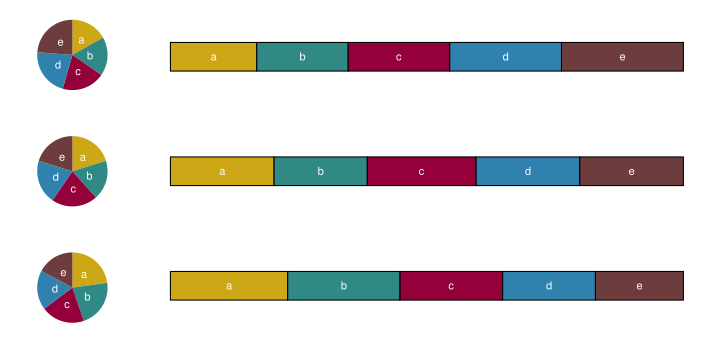

Colleagues Don’t Let Colleagues Make Pie Charts [2]–[5]
Code
data1 <-data.frame(name = letters[1:5], value =c(17, 18, 20, 22, 24))data2 <-data.frame(name = letters[1:5], value =c(20, 18, 21, 20, 20))data3 <-data.frame(name = letters[1:5], value =c(24, 23, 21, 19, 18))plot_pie <-function(data) {ggplot(data, aes(x ="name", y = value, fill = name)) +geom_bar(width =1, stat ="identity") +coord_polar("y", start =0, direction =-1) + bene_palette_shifted +geom_text(aes(label = name), position =position_stack(vjust =0.5), color ="white") +xlab("") +ylab("")}a <-plot_pie(data1)b <-plot_pie(data2)c <-plot_pie(data3)a + b + c + patchwork_defauts
Figure 1: Pie Charts
Colleagues Don’t Let Colleagues Make Pie Charts
Code
# reuses plots of fig-pies# add source column to each data framedata1 <- data1 %>%add_column(type ="I")data2 <- data2 %>%add_column(type ="II")data3 <- data3 %>%add_column(type ="III")# combine data frames into a single data framedata_combined <-rbind(data1, data2, data3)g <-ggplot(data_combined, aes(x =rev(type), y = value, fill = name)) +geom_bar(position =position_fill(reverse =TRUE), stat ="identity", width =0.25, color ="black") + bene_palette_shifted +theme(legend.position ="none",panel.grid =element_blank(),axis.text.x =element_blank(),axis.text.y =element_blank(),axis.ticks.y =element_blank() ) +scale_x_discrete(expand =c(0, 0.4)) +geom_text(aes(label = name), position =position_fill(vjust =0.5, reverse =TRUE), color ="white") +xlab("") +ylab("") +coord_flip()layout <-"ADBDCD"a + b + c + g +plot_layout(design = layout) + patchwork_defauts

Figure 2: Pie Charts vs. Bar Charts (stacked)
Colleagues Don’t Let Colleagues Make Pie Charts
Code
# reuses plots of fig-piesplot_bar <-function(data) {ggplot(data, aes(x = name, y = value, fill = name)) +geom_bar(stat ="identity", color ="black") + bene_palette_shifted +geom_text(aes(label = name), position =position_stack(reverse =TRUE), vjust =1.5, color ="white") +ylim(0, 25) +xlab("") +ylab("")}d <-plot_bar(data1)e <-plot_bar(data2)f <-plot_bar(data3)layout <-"ABCABCDEFDEFDEFDEFDEF"a + b + c + d + e + f +plot_layout(design = layout) + patchwork_defauts
Figure 3: Pie Charts vs. Bar Charts
Colleagues Don’t Let Colleagues Make Bar Plots for Means Separation [6]
Code
bene_palette_shifted <-scale_fill_manual(values = bene_colors[-1], breaks =waiver())# group1 is sampled from a normal distribution with mean = 1 and sd = 1.# group2 is sampled from a lognormal distribution with mean = 1 and sd = 1.set.seed(2363)group1 <-rnorm(n =250, mean =1, sd =1)group2 <-rlnorm(n =250,meanlog =log(1^2/sqrt(1^2+1^2)),sdlog =sqrt(log(1+ (1^2/1^2))))groups_long <-cbind( group1, group2) %>%as.data.frame() %>%gather("group", "response", 1:2)bar <- groups_long %>%ggplot(aes(x = group, y = response)) +geom_bar(stat ="summary", fun = mean, aes(fill = group), width =0.5, colour ="black") +stat_summary(geom ="errorbar", fun.data ="mean_se",width =0.1, size =1 ) +scale_y_continuous(expand =expand_scale(mult =c(0, 0.1))) + bene_palette_shifted +theme_classic() +theme(text =element_text(color ="black"),axis.text =element_text(color ="black"),legend.position ="none",plot.title =element_text(size =10),plot.caption =element_text(hjust =0),axis.line.x =element_line(color ="black"),axis.line.y =element_line(color ="black"),panel.grid.major.y =element_line(color ="grey"),axis.title.x =element_blank() ) +labs(x ="Group",y ="Response" ) +ggtitle(paste0("group1: mean = ", signif(mean(group1), 2),"; sd = ", signif(sd(group1), 2), "\n","group2: mean = ", signif(mean(group2), 2),"; sd = ", signif(sd(group2), 2) ) )bar
Figure 4: Means separation bar plot
Colleagues Don’t Let Colleagues Make Bar Plots for Means Separation
Figure 5: Means separation alternatives: box plot and beeswarm plot
Colleagues Don’t Let Colleagues Make Violin Plots for Small Sample Sizes
Code
# Generate three sets of data from a normal distribution with mean = 1 and sd = 1.set.seed(666)data_set <-replicate(rnorm(5, mean =1, sd =1), n =3, simplify = T) %>%as.data.frame() %>%gather("sample", "Response", 1:3) %>%mutate(Group =str_replace(sample, "V", "group"))violin_eg <- data_set %>%ggplot(aes(x = Group, y = Response)) +geom_violin(aes(fill = Group), trim =FALSE) +stat_summary(geom ="point", fun = median) + bene_palette_shifted +theme_classic() +theme(text =element_text(color ="black"),axis.text =element_text(color ="black"),panel.grid.major.y =element_line(color ="grey"),legend.position ="none",axis.title.x =element_blank() )violin_eg
Figure 6: Violin plots for small sample sizes (dot at median)
Colleagues Don’t Let Colleagues Make Violin Plots for Small Sample Sizes
H. Siirtola, “The Cost of Pie Charts,” in 2019 23rd International Conference Information Visualisation (IV), Jul. 2019, pp. 151–156. doi: 10.1109/IV.2019.00034.
T. L. Weissgerber, N. M. Milic, S. J. Winham, and V. D. Garovic, “Beyond Bar and Line Graphs: Time for a New Data Presentation Paradigm,”PLOS Biology, vol. 13, no. 4, p. e1002128, Apr. 2015, doi: 10.1371/journal.pbio.1002128.
R Core Team, R: A language and environment for statistical computing. Vienna, Austria: R Foundation for Statistical Computing, 2023. Available: https://www.R-project.org/
Y. Xie, “knitr: A comprehensive tool for reproducible research in R,” in Implementing reproducible computational research, V. Stodden, F. Leisch, and R. D. Peng, Eds. Chapman; Hall/CRC, 2014.
[11]
Y. Xie, Dynamic documents with R and knitr, 2nd ed. Boca Raton, Florida: Chapman; Hall/CRC, 2015. Available: https://yihui.org/knitr/
[12]
Y. Xie, knitr: A general-purpose package for dynamic report generation in r. 2023. Available: https://yihui.org/knitr/
Y. Xie, J. J. Allaire, and G. Grolemund, R markdown: The definitive guide. Boca Raton, Florida: Chapman; Hall/CRC, 2018. Available: https://bookdown.org/yihui/rmarkdown
![]()
 GitHub
GitHub